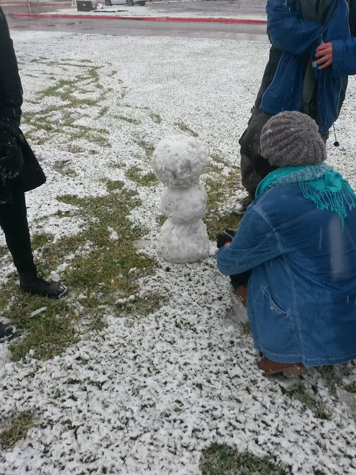
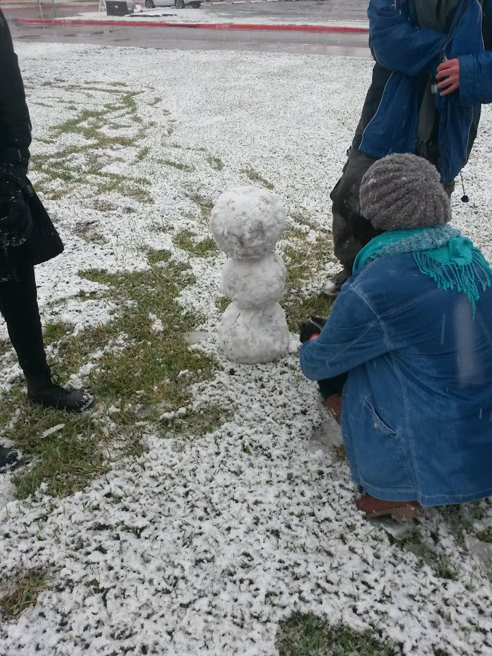

ABOUT ME
My name is Ruben Arevalo, and I am currently a software engineer fellow at Headstarter, and an aspiring software developer from McAllen, Texas.
As someone who has been coding for the past 7 years since my junior year of high school back in 2017, I have learned a lot of lessons along the way, and have taken a keen interest in software development. I strive to improve and learn new lessons every day, as well as continously honing my craft in programming so that I can apply what I learned into finding solutions for real-world problems.
In my personal life, I love to spend time with my family and friends, as well as listen to music, work out, code, and take photos of nature whenever I have free time.
 

This section is under construction.
Education

UT Rio Grande Valley
Edinburg, Texas August 2019 - May 2023I earned my Bachelor of Science in Computer Engineering, with my concentration focusing on software development, in May 2023.

Achieve Early College High School
McAllen, Texas August 2015 - May 2019I earned my high school diploma in May 2019.

South Texas College
McAllen, Texas August 2015 - May 2019I earned my Associate of Science in Computer Science in May 2019--a few weeks before graduating from high school.
This section is under construction.